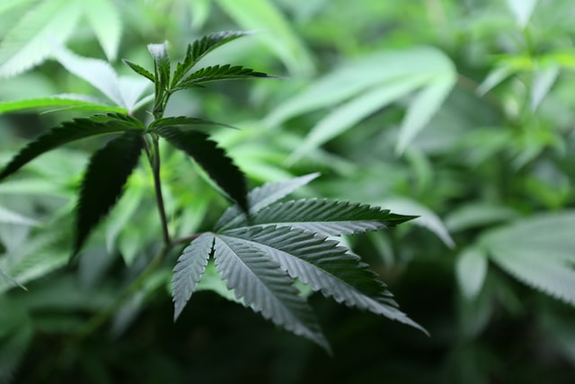
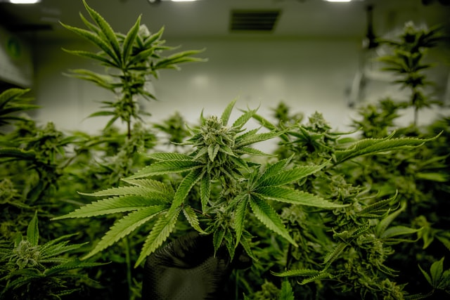
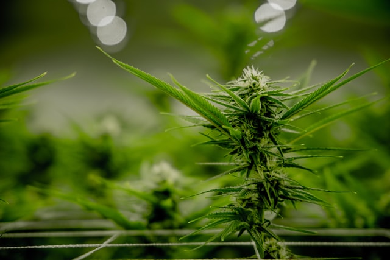

About
Santisuk Agritech is a fully integrated hemp company based and licensed in Thailand.
- is dedicated to produce and sell premium CBD oil to service the exploding CBD products industry.
- will own and operate hemp farms and hemp extraction facilities in Sukhothai Thailand and work exclusively with hemp cultivation companies to process the crude oil and refine it into a highly purified concentrate.
- believes that concentrates are the cleanest, most accessible way to consume most of the beneficial aspects of the plant.

Work
Mission:
To produce high-grade CBD oil and build a trusted CBD extraction brand.
Main Goals:
- Use new industrial hemp rules to produce hempderived CBD oil.
- Build a recognizable brand in a rapidly growing CBD industry.
- Be fully compliant with all laws and regulations.
- Combine a small family business hospitality with big business efficiency to provide high quality products.

Industry
While Europe and North America scramble toward unleashing the potential of the hemp industry, other regions of the world are making small, but substantial, steps towards joining them in the marketplace. Earlier September 2019, Thailand’s Public Health Ministry announced that seeds and oils extracted from hemp would be removed from its list of controlled substances.
“The intention is to allow extracts to be used in medicine, cosmetics and food and support hemp as a cash crop.” - Tares Krassanairawiwong, Secretary-General of the Food and Drug Administration in Thailand.
Thailand hemp industry is expected to grow to $661 Million by 2025 and Asia’s medicinal hemp market could by 2024 be worth $5.8 Billion. The Global State of Hemp: 2019 Industry Outlook predicts continued demand in the latter CBD market will be the main driving force behind the global hemp market’s continued growth.
